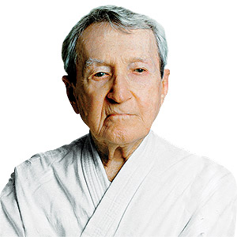

Quando falamos sobre Jiu-Jitsu, é impossível não mencionar a Gracie Barra. Mais do que uma academia, ela representa uma história de dedicação, superação e paixão por uma arte marcial que atravessou gerações e ultrapassou fronteiras. Hoje presente em diversos países, a Gracie Barra é reconhecida como uma das maiores organizações de Jiu-Jitsu do mundo, mas sua trajetória começou de forma muito mais simples: com pessoas que acreditavam que o esporte poderia transformar vidas. A história da Gracie Barra está diretamente ligada à história da família Gracie, responsável por desenvolver e popularizar o Jiu-Jitsu brasileiro.
Desde o início do século XX, a família dedicou sua vida ao aperfeiçoamento dessa arte marcial, criando um estilo próprio baseado em técnica, estratégia e inteligência. Em 1986, Carlos Gracie Jr., filho de Carlos Gracie, fundou a primeira academia Gracie Barra no bairro Barra da Tijuca, no Rio de Janeiro. Seu objetivo era criar um ambiente onde os alunos não apenas aprendessem a lutar, mas também desenvolvessem valores importantes para a vida. Naquela época, ninguém imaginava que aquela academia se tornaria uma das maiores referências mundiais do esporte.
O que começou com poucos alunos e muito esforço cresceu graças à dedicação de professores e atletas que acreditavam nos mesmos princípios. Ao longo dos anos, a Gracie Barra expandiu sua atuação para diversos estados brasileiros e, posteriormente, para outros continentes. Hoje, milhares de pessoas treinam diariamente seguindo a mesma metodologia criada por Carlos Gracie Jr., mantendo vivo um legado construído com muito trabalho e amor pelo Jiu-Jitsu. Mais do que ensinar golpes, a Gracie Barra passou a ensinar uma filosofia de vida baseada no respeito, na disciplina e na busca constante pela evolução pessoal.

Carlos Gracie Jr nasceu cercado pelo universo do Jiu-Jitsu. Desde pequeno, observava o empenho de sua família em desenvolver a modalidade e compreendeu que aquela arte marcial era muito mais do que um esporte. Seu sonho era tornar o Jiu-Jitsu acessível ao maior número possível de pessoas. Para isso, criou uma metodologia organizada, capaz de ensinar desde iniciantes até atletas de alto rendimento.
Sua visão foi fundamental para a internacionalização do esporte. Graças ao seu trabalho, pessoas de diferentes culturas, idiomas e nacionalidades passaram a conhecer e praticar o Jiu-Jitsu brasileiro. Hoje, Carlos Gracie Jr. é reconhecido mundialmente por sua contribuição para o crescimento da modalidade e por manter viva a tradição da família Gracie.
